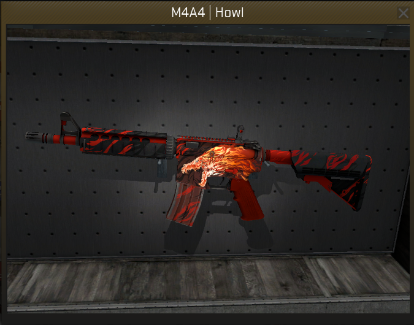

Top 5 Skins mais caras do CS GO
1.AWP - Dragon Lore Souvenir
São as snipers mais desejadas no game, onde seu valor pode variar entre US$ 600 até US$ 4 mil nas categorias normais. Entretanto, existem poucas na categoria de Lembrança e se ela possuir o adesivo do jogador correto, o preço dela pode chegar em algumas dezenas de milhares de dólares. Como a Dragon Lore Lembrança do Skadoddle, que foi recentemente vendida por US$ 61 mil.
2.Karambit - Case Hardened (Blue Gem)

As facas são as peças mais desejadas no jogo e a Karambit é o modelo com o maior valor. Todavia, a skin Case Hardened tem uma grande variação, e existem as denominadas Blue Gems.Uma Blue Gem possui quase toda a sua lâmina na coloração azul. Alguns exemplares dela já foram vendidos por US$ 22,5 mil!A mais cara já vendida até hoje foi comprada por um colecionador chinês, que se denomina como “o rei das Blue Gems”, por US$ 100 mil.
3.AK47 - Case Hardened (Blue Gem)
A AK47 Case Hardened segue o mesmo conceito: o float da arma altera em muito no valor final. É possível encontrar exemplares pelo valor de US$ 2,5 mil, variando até US$ 30 mil.
4.StatTrak M4A4 - Howl
A skin mais polêmica já criada, a valorização da Howl se deu conta por problemas com direitos autorais em sua criação, o que tornou o item mais raro ainda. Contudo, o exemplar Novo de Fábrica, com o melhor float existente e com a presença de alguns adesivos raros foi vendido por US$ 26 mil, mas outras peças em ótimo estado podem ser encontradas por US$ 2,7 mil.
5.StatTrak Karambit - Crimson Web
Pouquíssimas facas StatTrak Karambit - Crimson Web na categoria Nova de Fábrica existem, logo o valor das que estão à venda são muito altos. Atualmente, é possível encontrar uma por US$ 12 mil, porém o exemplar em melhor estado foi vendido por US$ 60 mil.